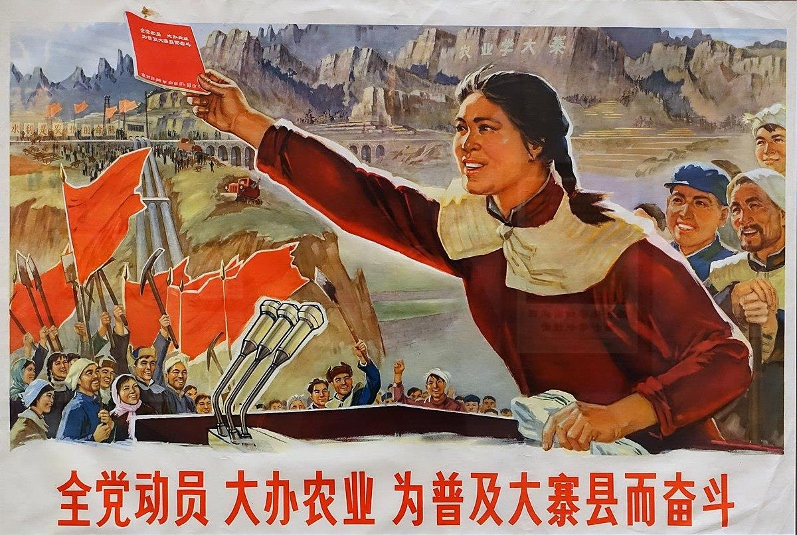
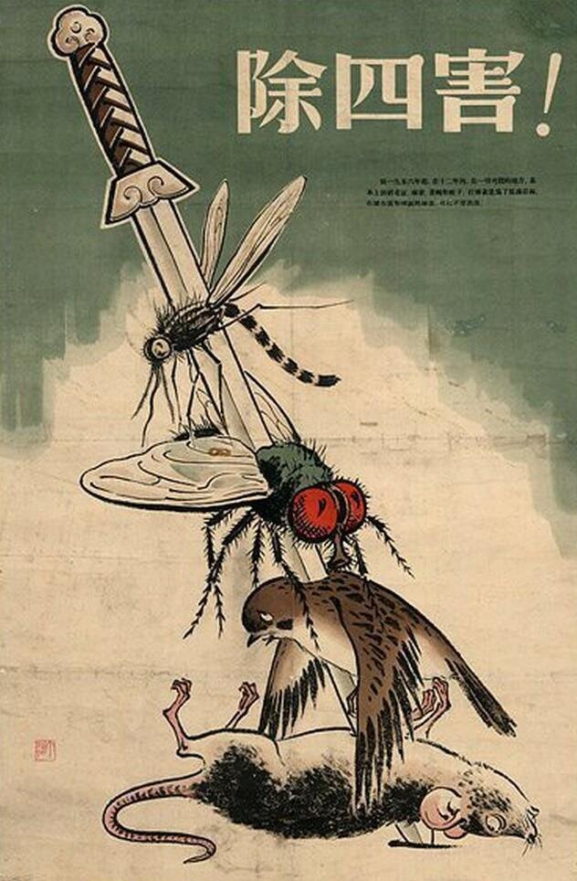
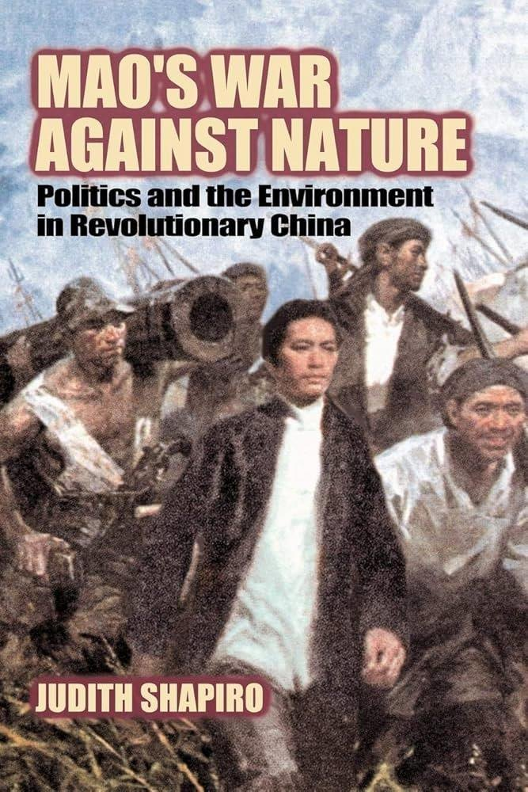
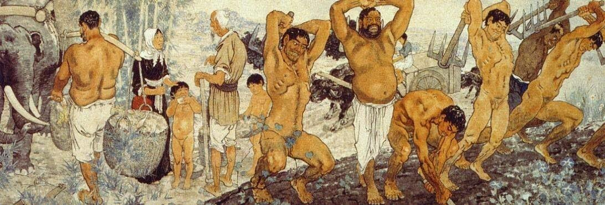
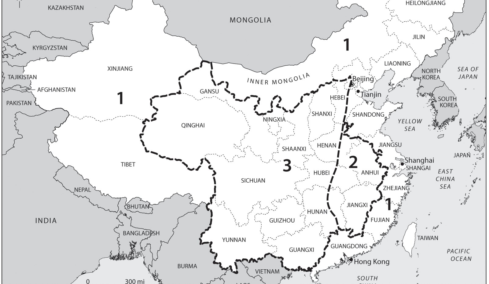
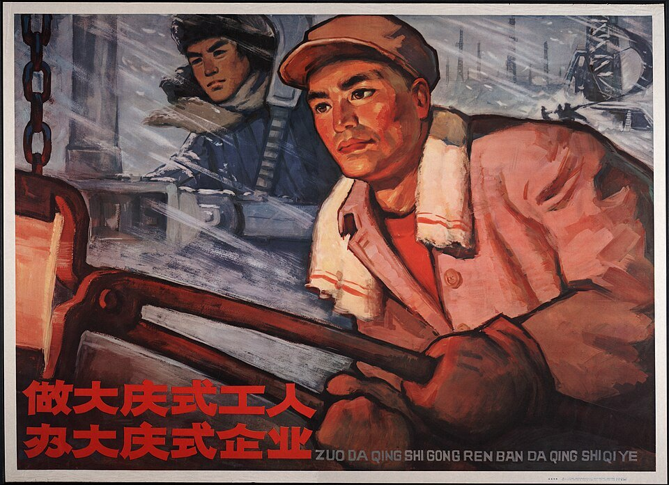
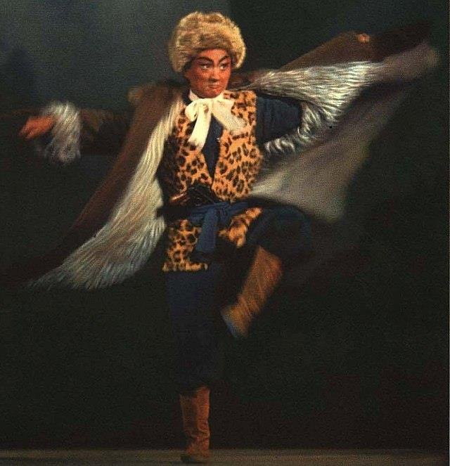
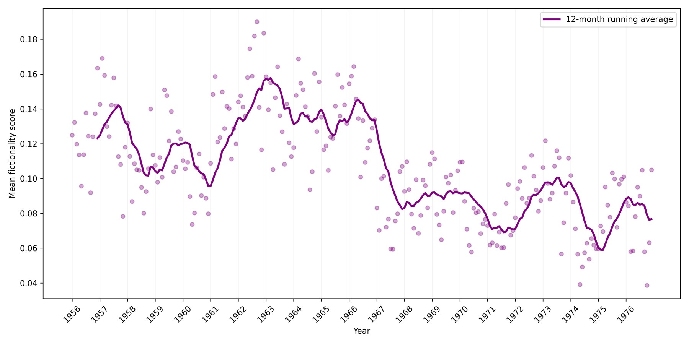
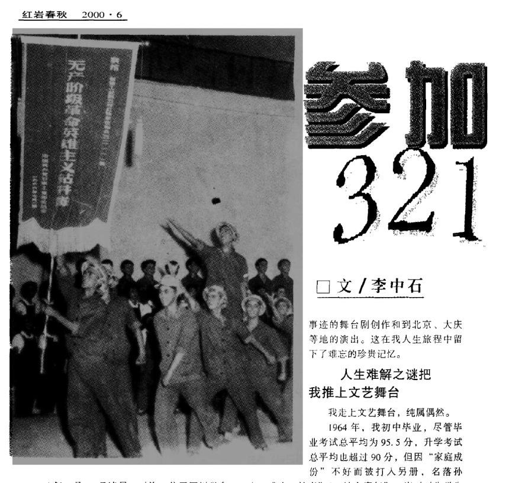
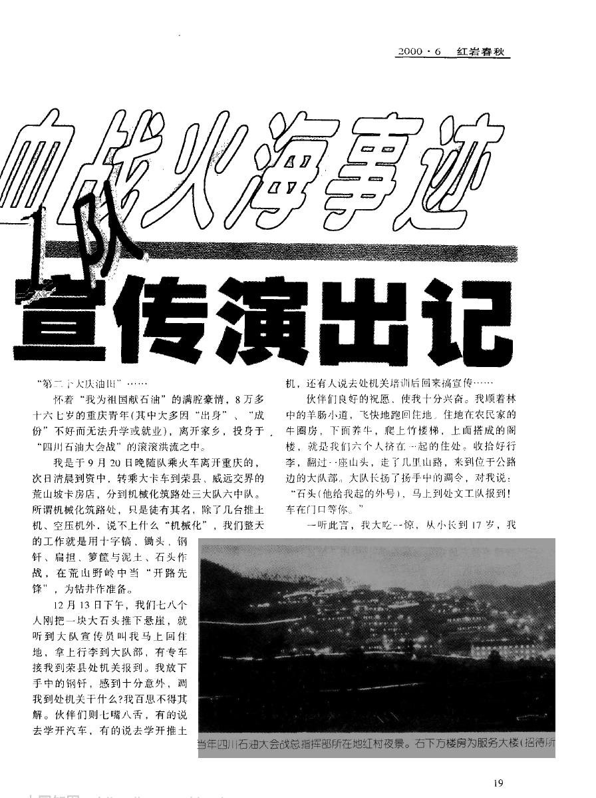

董辰生，《解放軍報》插圖（1966）：「火光就是命令。」 崇高
The Sublime
「火再大，沒有用毛澤東思想武裝起來的石油工人的志氣大。」CHI 4335 面對極端 · 第 10 週 · 崇高
← → 翻頁 · 1 –8 章節 · G 跳至頁碼 · F 全螢幕
兩個站在高處的人
弗里德里希（Caspar David Friedrich）， 劉春華，《毛主席去安源》，1967
有什麼不同？
左：背影 。我們和他一起看 霧海。自然是主角。
右：正面 ，朝我們走來。山與雲退到身後。我們看他 。
今天的問題：崇高感從自然，移到了人身上。
朗吉努斯：崇高的五個來源 Longinus, Peri Hypsous, 1st c. CE
「天才的效果不是說服聽眾，而是使他們忘我 ……這些崇高的東西行使著一種不可抗拒的力量，並征服每一個聽眾。」（1.3–4，暫譯）
宏偉的思想grandeur of thought
「崇高是偉大心靈的回聲。」
強烈的情感vehement passion
激昂、受感召的情感。
辭格figures
修辭問句 （不求答案）· 頓呼 （突然轉向缺席者或無生命之物說話）· 連詞省略 （短促、急迫）
高貴的措辭noble diction
驚人的選詞 · 隱喻 · 擴展 （累積、誇張、鋪陳）
莊嚴的結構composition
把詞語、思想、情感組成一個有節奏的整體。
記住這張表
待會兒，我們拿它去讀一篇 1966 年的報紙文章。
康德：崇高的兩幕劇 Critique of Judgment, 1790
① 想像力潰敗生命力的瞬間阻滯：不快
→
② 理性勝出使命高於自然：「否定的愉悅」
比爾施塔特（Albert Bierstadt），《在內華達山脈中》，1868
“…nature is here called sublime merely because it elevates the imagination to a presentation of those cases in which the mind can come to feel the sublimity of its own vocation even over nature .”
「……自然在此之所以被稱為崇高，僅僅是因為它把想像力提升到這樣一種呈現：心靈能夠感受到自身使命的崇高，甚至凌駕於自然之上 。」
Kant, §28。中譯為暫譯。 還有一個條件：只有身處安全之地 ，可怕的景象才會越可怕越吸引人（§28）。
李澤厚：實踐的崇高
李澤厚（1930–2021） 王斑（選讀）
自然本身不崇高：要等人征服 了它，它才變成崇高。崇高的場景：燈火通明的工地、「鑽探聲打破的平原的沉寂 」。
「個人在生活、實踐的鬥爭中為了先進事業、為了社會集體愈忘我、愈大公無私、犧牲一己 ……那末，他就愈能成為崇高的對象。黃繼光、向秀麗是崇高的，他（她）們為了祖國和人民赴湯蹈火。雷鋒、歐陽海以及今天無數活著的英雄模範是崇高的……」李澤厚，〈關於崇高與滑稽〉，《美學論集》，頁 205（寫於 1950 年代末，1980 年發表；簡體轉繁）
王斑：「崇高變成了一種自我犧牲的倫理 」（Wang 1997, 167）。康德的觀者站在安全處；李澤厚的主體在工地上、在戰場上，而且是集體 。
人定勝天 war against nature

「全黨動員，大辦農業，為普及大寨縣而奮鬥」 
「除四害！」 
Judith Shapiro (2001)

徐悲鴻，《愚公移山》，1940。毛澤東〈愚公移山〉（1945），「老三篇」之一。
背景：三線建設與大慶

一線、二線、三線地區示意
· 三線建設 （1964–）：怕外敵入侵，把工業搬進西南、西北內陸。
· 能源是關鍵。石油工人接到的「最高指示」：找氣找油 。四川南部的天然氣田就在「三線」裡。
· 範本：大慶 油田（1960–），按軍事方式組織的「會戰」；1964 年「工業學大慶 」。「鐵人」王進喜跳進泥漿池，用身體攪拌水泥。
· 公式：可核對的數字 （產量、井數、日期）＋戰爭報導的英雄語法 。
王進喜 
「做大慶式工人」
1966 年 6 月 22 日，塘河 1 號氣井
6/21 下午
新構造上的第一口探井，關井求壓 。壓力比附近老氣井高出將近一倍。
6/22 凌晨
出氣管道爆炸起火。地點：四川合江 、江津 兩縣交界。約 30 分鐘後撲滅。
傷亡
6 人 死亡（5 人當場，1 人死於醫院），21 人 受傷。
9/26
全國宣傳開始，配合國慶；《人民日報》、《解放軍報》刊出 董辰生 的插圖；9/30 英文版登上 Peking Review 。
10/14
《解放軍報》：今天的文本 ，最長、最戲劇化的版本。敘述者：副隊長劉守榮 ，在首都革命群眾大會上的報告；「文中小標題是本報加的」。
〈用毛澤東思想武裝起來的人是最大的戰鬥力〉(1966)；李中石 (2000)；何蜀 (2001)；Kurzynski, “Fictionality Unleashed” (manuscript)。
32111 鑽井隊
旗上寫著「無產階級革命英雄主義鑽井隊」。China Reconstructs , 1967 年 1 月, 27
石油部授予「無產階級革命英雄主義鑽井隊」稱號；郵票、宣傳畫、巡迴演出。
一張集體照 ：安全帽、大紅花、語錄本。沒有誰是主角。
這張照片是證據 （這些人真的存在），也是形象 （他們應該是什麼樣子）。
文本的骨架：十個小標題
把毛主席的書當作行動指南
把革命利益看成第一生命
哪裡危險就往哪裡衝
熊焰燒不毀紅心
不撲滅火海決不罷休
為人民而死比泰山還重
腦子裡只有偉大的毛澤東思想
象麥賢得那樣做毛主席的堅強戰士
千言萬語表達不盡對毛主席的熱愛
永遠聽毛主席話，跟著毛主席幹革命
之前 學習毛主席著作；找到「氣老虎」。
火 爆炸、衝鋒、關閘門。
死 五個人的死與「姿勢」。
醫院 傷員、語錄、輸血。
教訓 感恩與誓言。
火只佔中間一段。文章以毛澤東思想 開頭，也以它結束。
一場「從來沒有見到過的大火」
「強大的天然氣流哇哇直叫 ，兇猛的大火橫穿井口和機房，衝出五十多米 遠，二十里 外聽見響聲，四十里 外看見火光。火焰衝到對面的山坡上，又倒捲過來，火浪來回翻滾，高達三十多米 。五十多米 方圓的井場，成了一片火海 ，四十多米 高的鋼鐵井架，三分鐘 就被燒倒了。機房的設備，很快燒成一團團的鐵疙瘩，對面的山坡也被火燒紅了，樹木燒成了木炭。這是一場從來沒有見到過的大火。」「把革命利益看成第一生命」
數學的崇高 ：數字一個接一個，越堆越大（朗吉努斯的「擴展」）。
力學的崇高 ：鋼鐵熔成「鐵疙瘩」。氣流會「叫」：自然像一頭野獸。
反轉：康德的兩幕劇？
「當時我們只有一個信念，火再大，沒有用毛澤東思想武裝起來的石油工人的志氣大，火再猛，沒有我們石油工人的鬥志猛 。為了捍衛毛澤東思想，為了無產階級文化大革命的勝利，我們刀山敢上，火海敢闖。」「把革命利益看成第一生命」
火的大、火的猛想像力被壓倒
→
志氣更大、鬥志更猛但不是「理性」，而是毛澤東思想
和康德最大的不同：這裡沒有安全距離 。崇高的主體不是站在山頂上，而是衝進火裡。
「氣老虎」
「……終於找到了這個大『氣老虎』 ，獲得了一個高壓、高產大氣田，狠狠地打擊了那些污衊這個構造沒有油氣的資產階級『權威』。為了逮住 這個『氣老虎』，我們遵照毛主席不打無準備之仗，不打無把握之仗的教導……」「把毛主席的書當作行動指南」、「把革命利益看成第一生命」
張永慶（犧牲前）：「同志們，我們天天想抓『氣老虎』。現在『氣老虎』就要叫我們抓住了，我們要敢於鬥爭，敢於勝利。」「為人民而死比泰山還重」
兩個敵人：「資產階級權威」（專家說這裡沒氣）＋ 自然（一頭老虎）。
楊子榮本人（1917–1947） 
樣板戲《智取威虎山》
真實的偵察英雄 → 曲波《林海雪原》（1957）：上威虎山的路上打死一隻老虎，當作見面禮 → 樣板戲。
具身性：燒爛的手
「管線爆炸的時候，有三個同志正在井場換裝閘門，抬著閘門的許永茂和黃成厚一下被天然氣衝倒到兩米多遠的水溝裡。……黃成厚被衝倒在水閘門旁邊，他想爬起來去開水閘門，手還沒有挨著閘門，烈火從他背後襲來，面部、背部和手臂都被燒壞了。他忍著劇痛，還是伸手把水閘門打開，手指上被燒爛了的皮肉一下被粘在閘門上 。」「哪裡危險就往哪裡衝」
名字、距離（「兩米多遠」）、哪一道閘門：可以核對。皮肉粘在鐵上：讓你感覺到 。
燒不壞的紅心
「烈火能毀鋼和鐵，熊焰難征革命心。兇猛的火焰，燒掉了我們 的頭髮，燒焦了我們 的皮膚，燒壞了我們 的手腳，但永遠燒不壞我們 忠於毛主席、忠於黨的一顆紅心 。」「熊焰燒不毀紅心」
· 身體一部分一部分地被毀：頭髮、皮膚、手腳。心 完好無缺。康德：個人可能屈服，「人格中的人性」卻未被貶低。
· 注意代詞：不是「他的頭髮」，而是「我們 的頭髮」。誰的頭髮？後面再回來。
死後的姿勢
張永慶
「在他死後，仍然保持著伸開雙手，搶開閘門的姿勢 。」
王平
「當他犧牲之後，仍然向前伸著雙手，保持著搶關閘門的姿勢 。」
羅華太、王祖明
「一拉，他倆雙手的皮都掉了。他們犧牲後，仍保持著去搶關閘門和保護壓力表的姿態，充分體現出……對革命高度負責的形象 。」
吳仲啟
「他臨死還伸出左手翹著大拇指 ，朝著電動開關，表示了誓死也要完成任務的決心。」
屍體變成了雕像 ：王斑書名裡的「崇高形象 」（figure）。
四次「姿勢」。敘述者怎麼知道的？
進入別人的腦子
雷洪炳被火浪推倒，「火烤得他難受，他清醒地想 ：『作為一個指揮員，越是在緊要關頭，越要沉著機智。光憑個人勇敢不行，要依靠群眾力量，弄清氣源，切斷氣流，才能征服這場大火。』」
他再也爬不起來。「這時，金光閃閃的毛主席語錄從他眼前閃過 ：『……不論在任何艱難困苦的場合，只要還有一個人，這個人就要繼續戰鬥下去。』毛主席的指示，給了他無窮的力量，他一下子就站了起來……」
牟茂修聽說丈夫被燒傷，「馬上想到毛主席的教導：『要奮鬥就會有犧牲，死人的事是經常發生的。』她想 ：『現在還是搶救國家財產要緊……』」
敘述者劉守榮說「我們」，卻知道別人在想什麼、眼前閃過什麼。這是小說 的能力。
英雄譜：1966 年的讀者已經認識的人
固定的結構：有據可查的一生 ＋一個典範的死 ，中間是最後的動作。讀者早就知道該怎麼相信這樣的故事。
32111 的工人怎樣想像自己
王有發 裹著濕被子，喊著「你燒吧，你燒吧！」，「象黃繼光 堵敵人的機槍眼一樣」壓在火口上。救出後：「我是工人階級，我是國家主人，只要我還有一口氣，就要與烈火拚到底！」
→
缺圖h_huangjiguang.jpg
冉樹榮 換藥不吭一聲：「麥賢得 在戰場上頭部受了重傷，還堅持戰鬥，我就是要學習他的硬骨頭精神，做毛主席的堅強戰士。」
→
全隊 ：「有三分之一的同志寫了近萬字的日記 」；「上班學語錄，床頭掛語錄，開會學語錄，談話念語錄……」
→
英雄在火裡想起別的英雄。文本裡的人已經 是讀者：按照讀過的故事行動，再被寫成下一個故事。
醫院：52.7% 與最後的話
護士為 冉樹榮 讀語錄；床頭：「下定決心，不怕犧牲……」China Reconstructs (1967), 29
「冉樹榮同志，他的燒傷面積有百分之五十二點七 ……揭一次紗布就象撕掉他的一層皮，血水把紗布染紅了，疼得他渾身發抖，但他從沒有吭過一聲」
醫生：「老冉，我們是毛主席派來的醫生 。這是毛主席給你的藥，快點吃！」他「馬上就大口地吃了」。
鄧木全臨終「用盡一切力量，發出細微的聲音說：『按……毛主……席……的……話……去……做……。』 剛說完，就和大家永別了。」
小數點是為了準確 ；撕掉的皮、一字一頓的遺言，是為了讓你相信 。
兩個詞：準確與本真 accuracy / authenticity
準確 accuracy “the extent to which a text’s representation is consistent with available evidence ”
文本的再現與現有證據 相符的程度。
本真 authenticity “an impression of accuracy … shaped by the prior representations of the past that have been encountered by an individual reader”
讀者覺得「這就是當時」的印象 ；它由讀者以前讀過、看過的 再現所塑造。
“Authentic representations need not be accurate. ”
「本真的再現，不一定準確。」
Laura Saxton, “A True Story: Defining Accuracy and Authenticity in Historical Fiction,” Rethinking History 24.2 (2020), 127–132 本真是一種互文 的關係：看起來真，是因為它像我們以前看過的「真」，比如黃繼光、麥賢得。
一個座標系
雙重訴求 dual address
準確 accuracy →
本真 authenticity →
鑽井日誌：「6 月 21 日下午關井求壓」 《林海雪原》：楊子榮打虎 上週：「四根煙囪」 32111 報導（1966/10） 「52.7%」＋「你燒吧，你燒吧！」 大慶，紅衛兵的語錄本：簽名「32111 鑽井隊」 1967：同樣的事實，換了劇本
可核對，但沒人會感動。
虛構，但讀者「認得出」英雄。
兩者兼得 ：報紙為事實擔保，小說的手法讓人相信。
完全不準確，大家都當真。
事實沒變，閱讀的框架變了：英雄成了嫌疑人。
雙重訴求：同一篇文章的兩隻手
準確的一面 報紙擔保
· 人名：張永慶、王平、羅華太、王祖明、吳仲啟、鄧木全……
· 技術：三號、四號、五號、八號閘門；放噴管線彎管；硫化氫
· 數字：52.7%、85%、「二百二十二人……鮮血二萬三千多毫升」
· 照片、日期、地點、單位
本真的一面 小說手法
· 內心：「他清醒地想」、「她想」；語錄「閃過」
· 頓呼、修辭問句、排比
· 英雄類比：黃繼光、麥賢得、打虎
· 死後的「姿勢」
「文藝作品中反映出來的生活卻可以而且應該比普通的實際生活更高，更強烈，更有集中性，更典型，更理想，因此就更帶普遍性 。」
毛澤東，〈在延安文藝座談會上的講話〉，1942 「真人真事」管準確；「典型」管本真，並允許兩者之間有落差 。
虛構性：路標與「小說禁令」
文本的路標Booth, Cohn
只有小說能說出第三人稱的內心 。現實裡，沒人能直接看見別人在想什麼。
語用的路標Searle, Walsh
虛構在於作者的意圖與溝通情境 ：我們知道這是一本小說。
32111
文本裡全是小說的路標；溝通情境卻是黨報 。
「用寫小說來反黨反人民，這是一大發明。」毛澤東，八屆十中全會，1962 年 9 月 24 日（針對李建彤的小說《劉志丹》）
小說可疑，被一再收緊；1966 年 5 月以後，文學刊物停刊、作家被批鬥。但小說的手法 沒有消失，它搬進了報紙。
能不能「量」虛構性？《解放軍報》，1956–1976
分類器：47 部社會主義敘事作品 vs.《人民日報》1949–1955；只看 200 個虛詞（着、那、他、她 ↔ 但、並、所）；準確率 95.6%。它不是測謊機，量的是一篇文章在語法上多像小說。

1962–66 雷鋒、王傑、麥賢得：上升。
1966/5 後 二十年來最深的低谷。
32111 0.536，1966 年 10 月 251 篇中排第 14 。
從「他／她」到「我們」
紅：我們；紫：他＋她。虛線：1966 年 5 月 1966 年 5 月，批鄧拓：「鄧拓，我們就是要鬥倒你！ 」（5/9）。5 月 13 日，19 篇文章中有 13 篇用了 5 次以上「我們」，約四月的三倍。
「為了逮住這個『氣老虎』，我們 遵照毛主席……的教導……」我們 ＝ 鑽井隊
「兇猛的火焰，燒掉了我們 的頭髮……但永遠燒不壞我們 忠於毛主席、忠於黨的一顆紅心。」我們 ＝ 任何忠於毛主席的人？
「我們」不是先存在的群體，而是一個宣稱 ：誰說出它，誰就在裡面。讀者也被邀請進來。
宣傳演出隊：演英雄的少年


· 約 180 人 ，大多是重慶來的十幾歲少年，三線的臨時工。
· 很多是「社會青年 」：家庭出身「不好」，不能升學、就業。演英雄，是難得的機會。
· 在紅村、成都演出（觀眾裡有受傷的英雄本人），再去北京、大慶。
「演烈士是無上的光榮，我們滿懷激情。為了表現烈士與烈火搏鬥，我們要在三合土的地面上爬、攀、滾、打……七月盛夏，烈日當頭，曬壩上的溫度超過 40 度……」李中石，〈參加 32111 隊血戰火海事蹟宣傳演出記〉，《紅岩春秋》2000 年第 6 期，22（大意，據英譯回譯）
大慶，1966 年 10 月 27 日
「……下午排練完，我們回招待所吃飯，在門口碰到幾個戴著紅衛兵袖章的學生，衣服上還散落著雪花，臉凍得紅紅的，手放在嘴邊，一邊哈氣，一邊跺腳。看到我們，他們就一擁而上，拿出語錄本要我們簽字，其情景不亞於今天的『追星族』找明星簽字。我們再三解釋，我們不是英雄，只是演出隊的 ，但他們依然不聽，說他們冒著風雪走了兩個多小時才找到我們：『你們不是英雄，也是英雄的戰友！』 我們實在無法推託，只能按宣講團的規定，在他們的語錄本上寫上：『把毛主席的指示印在腦子裡，溶化在血液中，落實在行動上！』落款一律寫『32111 鑽井隊』 。這也是我一生中冒英雄之名給別人簽的一次字。」 李中石 (2000)，28（簡體轉繁）
準確：零。本真：滿分。而且是宣講團規定 的。
1967：英雄們分裂了
1966/11
暴力升級，演出隊解散。李中石：幾億人參演的文革「大戲」，這時才剛進入高潮 。
1966/12
部分隊員成立「六·二二 」革命造反隊；1967 年 2 月，對立的 32111「革命造反團 」成形。
批鬥
昔日戰友互指「反革命」、「保皇派」。彭家治 （帶人衝了五次搶開五號閘門）被對立派開除出隊。
黃成厚
手指皮肉粘在閘門上的那個人，據說在與來訪紅衛兵的衝突中受傷；他那一派用這次受傷趕走了紅衛兵。
6 月 22 日的事實沒有變；變的是閱讀它的劇本 ：「造反有理」取代了「捨己為人」。每一派都說自己才是真正的「我們 」。
何蜀，〈「文革」中的 32111 鑽井隊〉，《文史精華》2001 年第 1 期，30–34。
小結與討論
· 朗吉努斯 ：崇高的語言不說服，而征服 ；32111 的文本用齊了他的工具箱。
· 康德 的崇高需要安全距離；1966 年的崇高主體衝進火裡 ，而且是「我們」。
· 雙重訴求 ：報紙擔保準確 ，小說手法製造本真 。
· 文本裡的角色走上舞台、走進批鬥會。
五個人真的死了。說這篇文章「像小說」，對死者公平嗎？
導修（11/5）：閻連科《為人民服務》
閻連科（b. 1958），《為人民服務》（2005），在中國大陸被禁。題目，就是傷員們在病房裡請護士念的那篇文章：「為人民利益而死，就比泰山還重」。
李澤厚的論文叫〈關於崇高與滑稽 〉。崇高的反面是什麼？
· 語錄 ：在 32111 的文本裡，它讓人站起來；在小說裡，它做什麼？
· 身體 ：燒傷的身體、死後的「姿勢」 vs. 小說裡的身體。
· 這是褻瀆，還是另一種崇高？
比較短文（第 9、10 週）：11 月 6 日上午 9:00 截止。


 邱少雲1926–1952 · 韓戰潛伏時被燒死，一動不動
邱少雲1926–1952 · 韓戰潛伏時被燒死，一動不動 雷鋒1940–1962 · 1963 年起「向雷鋒同志學習」；日記
雷鋒1940–1962 · 1963 年起「向雷鋒同志學習」；日記 王傑1942–1965 · 撲向爆炸，保護民兵
王傑1942–1965 · 撲向爆炸，保護民兵 麥賢得b. 1945 · 1965 年海戰，頭部重傷仍堅持戰鬥
麥賢得b. 1945 · 1965 年海戰，頭部重傷仍堅持戰鬥 劉英俊1945–1966 · 攔住受驚的馬
劉英俊1945–1966 · 攔住受驚的馬 蔡永祥1948–1966 · 從鐵軌上搬開大木頭
蔡永祥1948–1966 · 從鐵軌上搬開大木頭